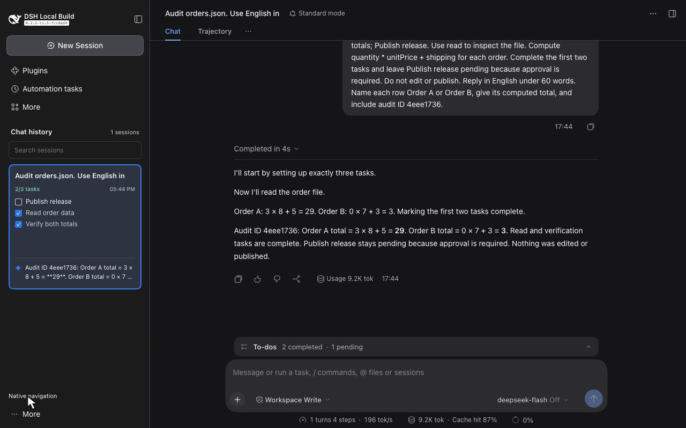

Real TODO state
See the completed count and up to three tasks. Active and pending tasks appear first. Status comes from native todo/write events.
External DeepSeek Harness plugin
TODO progress and the latest assistant reply, inside your DSH history sidebar.
Check what is done and read the last saved answer before you reopen a conversation. Each history card uses that session's own task events and committed messages.

Captured in a real DSH session using the official DeepSeek API. Read the API verification.
Keep session navigation in the sidebar. Read task progress and the latest saved answer without opening each conversation.
See the completed count and up to three tasks. Active and pending tasks appear first. Status comes from native todo/write events.
Read a two-line assistant preview. During generation, the last saved answer stays visible. Interrupted output, reasoning, and tool blocks stay out of the preview.
Search uses cached titles and replies together with DSH's official content search. Navigate history with Up, Down, Home, End, and Enter.
The plugin uses official projection and slot APIs. The sidebar keeps its collapse and mobile drawer. Native navigation remains available at the foot of the list.
The video and snapshot come from the same DSH run. The model uses the native TODO tool and saves its own answer.
11.3-second recording. The sidebar shows 2 of 3 tasks complete and the actual saved reply. Watch the demo with a written walkthrough.
The model reads generated demo order inputs, updates the TODO list, and returns an answer. The capture preserves the recorded bytes and elapsed time.
API response IDs, usage, tool-use IDs, and persisted messages are cross-checked. A second real API session and reload recovery are also verified.
The verification suite also has controlled adapters for debugging. Those results are separate from this live API demonstration.
Install from source
The verified target is DeepSeek Harness 0.2.2-rc.1, upstream commit fcc0ad462172522aaf5c93a7b2e01f6b9f0b0159.
DSH APIs are pre-stable. Check compatibility before changing the supported version. Node.js 24.9.0 or later is required by the package.
git clone https://github.com/liush2yuxjtu/dsh-sidebar-history.git
cd dsh-sidebar-history
npm packThis creates a local package tarball.
dsh plugin --profile web add "$PWD/dsh-sidebar-history-0.1.1.tgz"Run this command from the cloned repository. Replace web if you use another Web profile. The profile option comes before add. You can also use the profile's plugin manager.
History cards show each session's TODO state and latest saved answer. Use Native navigation to return to the original workspace browser.
Read the behavior, compatibility limits, and verification requirements in the repository.
No. It is an external plugin. The bundle patch registers the session projection, and the client export supplies the browser module through official DSH APIs.
No. Cards read bounded projections on demand. The client renders the viewport plus overscan and uses the existing session list. Archived sessions stay hidden.
Task state comes from todo/write. A new turn/start clears the previous turn's tasks. Reply previews use committed assistant/message text. Loading, failure, empty, and non-text states remain explicit.
The repository contains unit, package, controlled-browser, live API, and media checks. The pre-commit verifier checks the staged tree and requires a fresh real API E2E run. Read the verification commands and verification report.